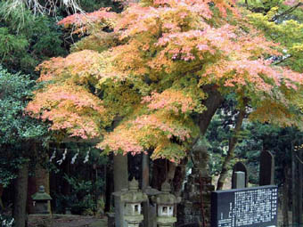

|
Rakuhouji, founded in 586, also referred to as Amabiki Kannon or "Rain-Summoning Kannon" was the starting point of the walk. |
Rakuhouji is hosting a wide variety of poultry, including this peacock. |
|
A short break on the way up. |
Masako inspecting mushrooms. |
|
Lunch break of the "slow group". |
|
|
Shrine on the top of Kaba-san. |
 |